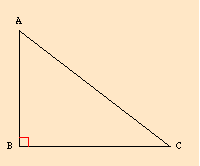
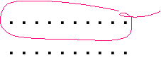

Aristotle and Mathematics
Aristotle uses mathematics and mathematical sciences in three important ways in his treatises. Contemporary mathematics serves as a model for his philosophy of science and provides some important techniques, e.g., as used in his logic. Throughout the corpus, he constructs mathematical arguments for various theses, especially in the physical writings, but also in the biology and ethics. Finally, Aristotle's philosophy of mathematics provides an important alternative to platonism. In this regard, there has been a revival of interest in recent years because of its affinity to physicalism and fictionalisms based on physicalism. However, his philosophy of mathematics may better be understood as a philosophy of exact or mathematical sciences.
This article will explore the influence of mathematical sciences on Aristotle's metaphysics and philosophy of science and will illustrate his use of mathematics.
- 1. Introduction
- 2. The Structure of a Mathematical Science: First Principles
- 3. Three Notions in Demonstration: ‘Of Every’, ‘Per se’, ‘Universal’
- 4. Demonstration and Mathematics
- 5. The Relation Between Different Sciences: Autonomy and Subalternation
- 6. What Mathematical Sciences Study: 4 Puzzles
- 7. Aristotle's Treatment of Mathematical Objects
- 8. Universal Mathematics
- 9. Place and Continuity of Magnitudes
- 10. Unit (monas) and Number (arithmos)
- 11. Mathematics and Hypothetical Necessity
- 12. The Infinite (apeiron)
- 13. Aristotle and Evidence for the History of Mathematics
- Glossary
- Bibliography
- Academic Tools
- Other Internet Resources
- Related Entries
1. Introduction
The late fifth and fourth centuries B.C.E. saw many important developments in Greek mathematics, including the organization of basic treatises or elements and developments in conceptions of proof, number theory, proportion theory, sophisticated uses of constructions (including spherical spirals and conic sections), and the application of geometry and arithmetic in the formation of other sciences, especially astronomy, mechanics, optics, and harmonics. The authors of such treatises also began the process of creating effective methods of conceiving and presenting technical work, including the use of letters to identify parts of diagrams, the use of abstract quantities marked by letters in proofs instead of actual numerical values, and the use of proofs. We cannot know whether Aristotle influenced the authors of technical treatises or merely reflects current trends.
In this context, Plato's Academy was fertile ground for controversy concerning how we are to know mathematics (the sorts of principles, the nature of proofs, etc.) and what the objects known must be if the science is to be true and not vacuous. Aristotle's treatments of mathematics reflect this diversity. Nonetheless, Aristotle's reputation as a mathematician and philosopher of mathematical sciences has often waxed and waned.
In fact, Aristotle's treatises display some of the technically most difficult mathematics to be found in any philosopher before the Greco-Roman Age. His technical failures involve conceptually difficult areas involving infinite lines and non-homogenous magnitudes.
Commentators on Aristotle from the 2nd century on tended to interpret Aristotle's mathematical objects as mental objects, which made Aristotle more compatible with neo-Platonism. Later the mechanistic movement in the late Renaissance treated Aristotle as divorcing mathematics from physical sciences in order to drive a deeper wedge between their views and his. Because of this, it has been very easy to discount Aristotle as subscribing to a version of psychologism in mathematics. These tendencies contribute to the common view that Aristotle's views mathematics are marginal to his thought. More recently, however, some sympathetic readers have seen Aristotle as expressing a fictionalist version of physicalism, the view that the objects of mathematics are fictional entities grounded in physical objects. To the extent that this view is regarded as a plausible view about mathematics, Aristotle has regained his position.
There are two important senses in which Aristotle never presents a philosophy of mathematics. Aristotle considers geometry and arithmetic, the two sciences which we might say constitute ancient mathematics, as merely the two most important mathematical sciences. His explanations of mathematics always include optics, mathematical astronomy, harmonics, etc. Secondly, Aristotle, so far as we know, never devoted a treatise to philosophy of mathematics. Even Metaphysics xiii and xiv, the two books devoted primarily to discussions of the nature of mathematical objects, are really concerned with diffusing Platonist positions that there are immutable and eternal substances over and beyond sensible substances and Pythagorean positions that identify numbers with sensible substances.
2. The Structure of a Mathematical Science: First Principles
Aristotle's discussions on the best format for a deductive science in the Posterior Analytics reflect the practice of contemporary mathematics as taught and practiced in Plato's Academy, discussions there about the nature of mathematical sciences, and Aristotle's own discoveries in logic. Aristotle has two separate concerns. One evolves from his argument that there must be first, unprovable principles for any science, in order to avoid both circularity and infinite regresses. The other evolves from his view that demonstrations must be explanatory. (See subsections A, B, and C of §6, Demonstrations and Demonstrative Sciences, of the entry Aristotle's logic.)
Aristotle distinguishes (Posterior Analytics i.2) Two sorts of starting points for demonstration, axioms and posits.
An axiom (axiôma) is a statement worthy of acceptance and is needed prior to learning anything. Aristotle's list here includes the most general principles such as non-contradiction and excluded middle, and principles more specific to mathematicals, e.g., when equals taken from equals the remainders are equal. It is not clear why Aristotle thinks one needs to learn mathematical axioms to learn anything, unless he means that one needs to learn them to learn anything in a mathematical subject or that axioms are so basic that they should form the first part of one ‘s learning.
Aristotle divides posits (thesis) into two types, definitions and hypotheses:
A hypothesis (hupothesis) asserts one part of a contradiction, e.g., that something is or is not.
A definition (horismos) does not assert either part of a contradiction (or perhaps is without the assertion of existence or non-existence).
Since a definition does not assert or deny, Aristotle probably intends us to understand definitions as stipulations or as defining expressions which are equivalent in some way to the defined term. The definition of unit as ‘indivisible in quantity’ will not presuppose that units do or do not exist. Hence, the syllogistic premise, ‘A unit is indivisibile in quantity,’ if taken as presupposing the existence of units, will not be a definition in this sense. Later, of course, Aristotle will allow for many other kinds of definitions.
There are many views as to what Aristotle's hypotheses are: (i) existence claims, (ii) any true assumption within a science, and (iii) the stipulation of objects at the beginning of a typical proof in Greek mathematics. Examples might be, ‘Let A be a unit,’ (where the object is stipulated to be a unit) or, more characteristically of Greek mathematics, ‘Let there be a line AB’ (where a line is stipulated to exist, namely AB). In fact, all these interpretations may have a modicum of what Aristotle means. In that case, Aristotle implies that any assumption within a science that asserts or denies something is a hypothesis. However, he singles out existence claims. How do existence claims work in Aristotle's conceptions of science? From Physics iv, we have claims such as ‘There is place,’ and ‘There is no void.’ However, the examples that Aristotle uses in the Posterior Analytics are claims such as that the genus exists, or specifically that there are units, or that there are points and lines. Aristotle also points out that sometimes the hypothesis of the genus is omitted as too obvious. Only by comparing these general claims with their use in Aristotelian mathematics can we get a sense of what Aristotle means. Aristotle intends us to understand that prior to the demonstrations in a scientific treatise, the treatise should state starting propositions. These include general claims broader than the science, definitions which are stated as stipulations and not as assertions, and a claim that the basic entities ‘exist’. What counts as an acceptable existence claim is relative to the actual science. The opening of a proof, ‘Let there be a line AB,’ is an application of the basic hypothesis of the science. Since Aristotle regards such proofs through particular lines as general proofs, the opening claim is actually to be understood as standing for the general claim that there are lines. This is how the hypothesis is used as a premise. The stipulation, ‘Let there be a triangle ABC,’ would not be a hypothesis on this interpretation, since he holds that the existence of triangles is to be proved, so that this instantiates a derived proposition.
A science consists of a genus (genos), what the science is about, and a collection of attributes, what the science says about the genus. The genus or kind is both defined and hypothesized to exist. From his examples (points and lines for geometry), it would seem that the genus is to be understood loosely as the fundamental entities in the science. The attributes are defined but are not hypothesized as existing. One must prove that the attributes belong to various members of the genus. For example, one must prove that triangles exist, e.g., that some [constructible] figures are triangles.
If we take very seriously the common view that Aristotle claims that every immediate premise of a demonstration expresses something about an existing entity, then one may well wonder how the principles of demonstration, axioms and posits, can be premises of demonstrations. Existence claims and stipulations do not express something about an existing entity. Since Aristotle calls the axioms, ‘those from which (demonstration arises),’ some have suggested that the axioms alone form the premises for a science and that a proof in any science arises by placing genus terms and their definitions in the axioms and then substituting terms like ‘triangle’ for their definitions when they arise in proofs. However, besides pointing to the inadequacy of the axioms for this job, it may be objected that Aristotle also calls the principles of demonstration immediate statements protaseis), i.e., axioms and posits. Another possibility is that he regards even stipulations and existence claims as premises, as well as other hypotheses, but treats the axioms as somehow more fundamentally the source of proofs. In this case, he has a looser conception of what counts as a premise than many readers would expect. In any case, if his proof theory is to work at all, he must allow many more immediate premises than one would find in the introduction to a standard text of ancient Greek mathematics.
For more information, see the following supplementary document:
Aristotle and First Principles in Greek Mathematics
3. Three Notions in Demonstration: ‘Of Every’, ‘Per se’, ‘Universal’
In the Posterior Analytics i.4, Aristotle also develops three notions crucial to his theory of scientific claims: ‘of every’, ‘per se’ (kath’ hauto) or ‘in virtue of itself’ (in four ways) and ‘universally’ (katholou). Although his exposition of these notions is tailored to his proof theory, the notions are designed also to characterize the basic features of any scientific claim, where the principal examples come mostly from mathematics. (See §6 Demonstrations and Demonstrative Sciences of the entry on Aristotle's logic.)
A holds true ‘of every’ B iff A holds of B in every case always. Note that this is a stronger condition than is meant in the Prior Analytics by ‘A belongs to all B’. Mathematical example: point is on every line (i.e., every line has points on it).A is per se1 with respect to B iff ‘A’ is in the account which gives the essence of B. Note that Aristotle does not say that A belongs to all B (e.g., ‘hair’ occurs in the definition of bald, but ‘having hair’ does not belong to a bald person), yet it is presupposed by the use Aristotle makes of it. Aristotle allows that there are immediate statements of the form, A belongs to no B. Mathematical examples: ‘line’ is in the definition of triangle, ‘point’ is in the definition of line.
A is per se2 with respect to B iff ‘B’ is in the account which gives the essence of A and A belongs to B. Mathematical examples: straight and circular-arc belong to line, odd and even to number. Some commentators have held that it is the disjunction which belongs per se2 (e.g., straight or circular-arc belongs per se2 to all lines); others that the examples are that each predicate belongs per se2 to the subject (e.g., straight belongs per se2 to (some) line). However, Aristotle should know that not all lines are straight or circular.
A is per se3 iff ‘A’ indicates ‘a this’ (tode ti), i.e., ‘A’ refers to just what A is. At Post. An. i.22, Aristotle identifies the per se3 with substance, the rock bottom of a syllogistic chain. However, one might well ask whether there must be an analogous notion within a science. If so, A would be per se3 if A is a basic entity in a given science, an instance of the kind studied by the science. If so, the per se3 items in arithmetic would be units.
A is per se4 with respect to B iff A belongs to B on account of A. Either no mathematical example is given or the examples are (depending on how we read the text): straight or curved belongs to line and odd or even belongs to number, but these may be cases of per se2. The non-mathematical example is: in getting its throat cut it dies in virtue of the throat-cutting.
A belongs to B universally iff A belongs to all B and A belongs to B per se (in virtue of B) and qua itself (qua B). Here the notion of ‘per se’ seems to be slightly different from those previously mentioned (it has been suggested that the sense is per se4), but, in any case, is said to be equivalent to ‘qua itself’. Perhaps we need a fifth notion of per se.
B has/is A per se5 (i.e., in virtue of B) iff A belongs to B qua B, i.e., there is no higher genus or kind C of B such that A belongs to C and so to B in virtue of belonging to C. Again, Aristotle does not mark out per se5 as a separate notion, so that the notion may be subsumed under per se4. Note that unlike per se1 and per se2, per se5 is in virtue of the subject of the predication.
The idea here seems to be that:
A belongs to B universally iff A belongs to all B and A belongs per se5 to B.
An alternative (stronger?) interpretation is that:
A belongs to B universally iff A belongs per se to all B and B belongs to all A. In this case, A and B are called, in modern discussions, commensurate universals. (cf. An. Post, B 16-17)
Aristotle describes the property that a triangle has angles equal to two right angles as being per se5 (= per se4) and universal, but also the property of ‘having internal angles equal to two right angles’ as per se accidens (kath’ hauto sembebêkôs) of triangle. It is commonly thought that these are somehow essential accidents. Since these follow from per se properties by necessity, it seems strange to call them accidents at all. Sometimes, however, it is more appropriate to think of accidents as concomitants, the result of different demonstrative chains. Alternatively, Aristotle frequently uses the same word to indicate consequences. In that case, they should be called per se consequences.
It should be noted that the proof theory of Aristotle requires that all predicates in demonstrations be either per se1 or per se2. What is neither per se1 nor per se2 is accidental. Hence, per se4 (or per se5 if it is a separate notion), and per se accidens should be reducible to these notions in any case.
4. Demonstration and Mathematics
Because of the formal success of his logical theory, Aristotle also considers most mathematical proofs as having the form of a universal affirmative syllogism, namely Barbara. (See the section on The Syllogistic in the entry on Aristotle's logic.) This means that most mathematical theorems are one thing A said of another C and that every mathematical demonstration has a middle term B which explains the connection between A and C. Aristotle provides several examples of such triads of terms in mathematics, e.g., two right angles-angles about a point-triangle, or right angle-half two right angles-angle in a semicircle. It has long been noted by commentators that mathematical proofs work with a particular case through universal instantiation (ekthesis) and then universalize to the general claim, and that not all propositions have the form: A is said of B, e.g., Elements 1 1, “To construct an equilateral triangle on a given line.” A more modern objection is that the formal theory of the syllogism as presented in Prior Analytics 1 1, 3-7 is woefully inadequate to express a theory involving conditionals and many-many relations, as is the case with all ancient mathematics. Nonetheless, Aristotle does think that most mathematical proofs actually do have this form. Those that wouldn't would certainly be negative propositions and possibly existential propositions. (We simply do not know enough about how Aristotle conceived of the logical form of existential propositions.) From a careful reading of the rest of the Prior Analytics, it becomes clear that Aristotle has a flexible notion of “one thing said of another” and that he regards standard mathematical proofs as really being in a universal form, which we express for purposes of comprehension as particular.
5. The Relation Between Different Sciences: Autonomy and Subalternation
A science is defined by the genus or kind it studies and by a group of specifiable properties which belong to that kind. Secondly, the properties studied within a science are defined in terms of the genus of the science (per se2). Hence, it follows that it will commonly be impossible to prove one thing using a different science. For one would have to prove that a property within one genus applies to a completely different genus. Hence, every science is autonomous. Aristotle makes this claim, however, in the context of his rejection of Plato's view that sciences are subordinate to knowledge of the Good. What he actually claims is much more modest. If one genus comes under another genus, it will be possible, in some cases incumbent, to prove that a property belongs to a genus by using a theorem from another science. In such a case the one science is said to be under (subalternate with) the other science.
Here are the sciences along with their relations which Aristotle mentions in the Analytics:
Geometry Stereometry (solid geometry) Arithmetic | | | Optics
(mathematical)Astronomy
(mathematical)Mechanics Harmonics
(mathematical)| | | Concerning the Rainbow Nautical Astronomy,
Phenomena,
EmpiricalAcoustical Science
Aristotle treats the science at the lowest level, descriptions of the rainbow, astronomical phenomena, and acoustical harmonics, as descriptive, providing the fact that something is the case, but not the explanation, which is provided by the higher science. It is very easy to speculate how Aristotle would fill in the relations in the table; e.g., would he put stereometry below geometry, as Plato does in Rep. vii? Similarly, the explanatory relation between mathematical optics and geometry is not the same as the relation of optics to empirical optics. This example of the rainbow seems to refer to the argument in Meteorology iii.5, where the observed fact that rainbows are never more than a semicircle (true in flat lands) is explained by a proof in optics that is thoroughly geometrical in character. Once the basic set-up and principle of reflection is provided, the rest is geometrical.
A different situation obtains when one science is not under another science, but some of the properties come from the other science. Aristotle's example is the fact that that round wounds heal more slowly [than slashes]. The medical property depends on the area of the wound and its perimeter.
Aristotle's point about autonomy is that a theorem in arithmetic (even less a theorem in harmonics) cannot be used to prove something in geometry. Here, arithmetic is probably understood as the number theory found in Euclid, Elements vii-ix, and not mere calculation of numbers, which, of course, is used in geometry. This allows the anti-Platonic point that theorems about the beautiful and theorems in mathematics have nothing to do with one another, even if some theorems are beautiful.
Elsewhere (esp. Physics ii.2 and Metaphysics xiii.3), Aristotle provides different accounts of the relations between mathematical sciences.
6. What Mathematical Sciences Study: Puzzles
Aristotle's principal concern in discussing ontological issues in mathematics is to avoid various versions of platonism. Aristotle shares with Plato the view that there are objects of understanding, that these must be universal and not particular and that they have to satisfy certain “Parmenidean” conditions, such as being unchanging and eternal. However, Aristotle rejects the view of Plato that objects of understanding are separate from particulars. This is a general problem in Aristotle's metaphysics. However, in the case of mathematical objects, there are three important difficulties. First, if physical objects are the objects of mathematical understanding and satisfy the standard definitions of line, circle, etc., then it is arguable that they manifestly fail in two ways (cf. Met. iii 2 997b25-8a19):
- The physical straight lines we draw are not straight; a physical tangent line does not really touch a circle at a point. In other words, physical objects fail to have the mathematical properties we study. This is the problem of precision.
- Physical mathematical objects lack properties which we require of objects of understanding. They are not separate or independent of matter. Hence, they are not eternal or unchanging. This is the problem of separability.
Although these two problems are distinct, Aristotle may hold that this failure is at least partly responsible for the failure of mathematical objects to have the mathematical properties we study. Platonic Forms fail in a third way.
- Suppose that there is a Form for each kind of triangle. There still would be only one Form for each kind. A mathematical theorem about diagonals of rectangles might mention two equal and similar triangles which are, nonetheless, distinct. Mathematical sciences require many objects of the same sort. This is the problem of plurality (cf. Met. iii 2 and Met. iii.1-2).
A fourth problem is not explicitly stated by Aristotle, but is clearly a presupposition of his discussion.
- An account of mathematics should not impinge on mathematical practice so as to make it incoherent or impossible. If mathematicians talk about triangles, numbers, etc., the account of mathematical objects should at least explain the discourse. This is the problem of non-revisionism (sometimes also called naturalism). So Aristotle says (Met. xiii.3 1077b31-33) of his own account of mathematics that “it is unqualifiedly true to say of the mathematicals that thay exist and are such as they <the mathematicians say>” (cf. Phys. iii.7 207b27-34 for an application of the principle).
To solve the problems of separation and precision, contemporary philosophers such as Speusippus and possibly Plato posited a universe of mathematical entities which are perfect instances of mathematical properties, adequately multiple for any theorem we wish to prove, and separate from the physical or perceptible world. Aristotle calls them mathematicals or intermediates, because they are intermediate between the Forms and physical objects, in as much as they are perfect, eternal, and unchanging like the Forms, but multiple like physical objects (cf., for example, Met. i.6 987b14-18, iii 2, xiii.1-2). This solution is the ancestor of many versions of platonism in mathematics.
Aristotle's rejection of intermediates involves showing that their advocates are committed to an unwieldy multiplicity of mathematical universes, at least one corresponding to each mathematical science, whether kinematics, astronomy, or geometry. However, he also sets out to show that such ontologies are not merely pleonastic, but also that an alternative account can be given free of all the difficulties mentioned. In other words, Aristotle's strategy is best seen as diffusing some versions of platonism.
Aristotle also rejects a compromise as merely compounding this difficulty, the view that either Forms or intermediates are immanent in things (separate but coextensive), since these different worlds will now have to exist bundled together.
7. Aristotle's Treatment of Mathematical Objects
The account here of Aristotle on the status of mathematical objects will center on five concepts, which Aristotle uses in his discussions: ‘abstraction’ or ‘taking away’ or ‘removal’ or ‘subtraction’ (aphairesis), ‘precision’ (akribeia), ‘as separated’ (hôs kekhôrismenon), ‘qua’ or ‘in the respect that’ (hêi), and ‘intelligible matter’ (noêtikê hylê). Principal sources are the Posterior Analytics, De Anima iii.6-8, Metaphysics iii.2, vi.1, vii.10-11, ix.9, x.1-2, xi.2-3, 7, xiii.1-3, Physics ii.2.
7.1 Objects From Abstraction or ‘Removal’ (ta ex aphaireseôs)
Aristotle occasionally refers to mathematical objects as things by, in, from, or through removal (in different works Aristotle uses different expressions: ta aphairesei, ta en aphairesei, ta ex aphaireseôs, ta di’ aphaireseôs). It is also clear that this usage relates to logical discussions in the Topics of definitions where one can speak of adding a term or deleting a term from an expression and seeing what one gets as a result. Our principal task is to explain what this logical/psychological removal is and how it solves the four puzzles. Aristotle starts with the class of perceptible or physical magnitudes. The examination of these is a part of physics (cf. Physics iii.4). The ontological status of these does not concern him, but we may suppose that they consitute the category of quantities: the bodies, surfaces, edges, corners, places, and times, sounds, etc. of physical substances (Categories 6).
In the Analytics, where the notion of matter is absent, Aristotle begins with a particular geometrical perceptible figure. What is removed is its particularity and all that comes with this, including its being perceptible. What is left then is a universal of some sort. Aristotle also does not seem to think in this work that there is any conflict between the plurality problem and thinking of all terms in a mathematical deduction as universals. However, since he allows that a term can be a very complex expression, it can designate a rich complex for which there would probably be no corresponding Form in a Platonic theory.
Elsewhere, Aristotle usually seems to mean that the attributes not a part of the science are removed. What is left may be particular, a quasi-fictional entity. It is the status of this entity which leads to much controversy. Is it a representation in the soul or is it the perceptible object treated in a special way? Ancient and medieval readers tended to take the former approach in their interpretation of Aristotle, that the object left is a stripped down representation with only the required properties. (Cf. Mueller (1990) and neo-Platonic foundations for these interpretations of mathematics, such as Proclus in his commentary on Euclid.)
Most modern readers, perhaps influenced by the critiques of Berkeley and Hume against the first position and certainly less committed to neo-Platonism, take the second approach. The objects studied by mathematical sciences are perceptible objects treated in a special way, as a perceived representation, whether as a diagram in the sand or an image in the imagination. Furthermore, perhaps as a response to Frege's devastating critique of psychologism and Husserl's first attempt at a psychological account of arithmetic, some have suggested that Aristotle has no need for a special faculty of abstracting. Rather the mind is able to consider the perceived object without some of its properties, such as being perceived, being made of sand, marble, bronze, etc. However, this is analogous to the logical manipulation of definitions, by considering terms with or without certain additions. Hence, Aristotle will sometimes call the material object, the mathematical object by adding on. As a convenience, the mind conceives of this as if the object were just that. On this view, abstraction is no more and no less psychological than inference.
Conceptually, we might think of the process as the mind rearranging the ontological structure of the object. As a substantial artifact, what-it-is, the sand box has certain properties essentially. The figure drawn may be incidental to what-it-is, i.e., an accident. In treating the object as the figure drawn, being made of sand is incidental to it. Hence, ‘things by removal’ may be one way of explaining perceptible magnitudes qua lengths. This is the concept which does most of the work for Aristotle.
7.2 Precision (akribeia)
In his discussions of precision, Aristotle states that those sciences which have more properties removed are more precise. Arithemetic, about units, is more precise than geometry, since a point is a unit having position. A science of kinematics (geometry of moving magnitudes) where all motion is uniform motions is more precise than a science that includes non-uniform motions in addition, and a science of non-moving magnitudes (geometry) is more precise than one with moving magnitudes. However, one might infer that ‘precision’ here means nothing more than ‘clarity’ (or perhaps ‘refinement’, with all its ambiguity). Does this concept of ‘precision’ provide a framework for solving the problem of precision?
7.3 As Separated (hôs kekhôrismenon)
Aristotle solves the separability problem with a kind of fictionalism. The language and practice of mathematicians is legitimate because we are able to conceive of perceptible magnitudes in ways that they are not. The only basic realities for Aristotle remain substances, however we are to conceive them. A primary characteristic of substances is that they are separate. Yet we are able to speak of a triangle, a finite surface, merely the limit of a body, and hence not separate, as if it were separate (hôs kekhôrismenon). It is a subject in our science (in our discourse in the science). The mental and logical mechanism by which we accomplish this is the core of Aristotle's strategy in diffusing platonisms.
7.4 X Qua (hêi) Y
The word Aristotle uses is commonly translated with the English word ‘qua’ which itself translates the Latin relative pronoun ‘qua’, but with one important grammatical difference. The English adverb is normally followed by a noun phrase.
As a relative adverbial pronoun in the dative case, the Greek word captures all possible meanings of the dative, including, ‘where’, ‘in the manner that’, ‘by-means-of-the-fact-that’, or ‘in-the-respect-that’. Some have suggested translating it with the word ‘because’, although it is arguable that the English word at best intersects with the appropriate Greek meaning (perhaps ‘just or precisely because’ works better. Hence, ‘X qua Y’ should be understood as elliptic for:
‘X in the respect that X is Y’
or
‘X by means of the fact that X is Y’ (or ‘X precisely because X is Y’).
Here ‘X’ is normally a noun phrase referring to an entity in any ordinary way, e.g., arithmetic studies Leopold qua unit, this man qua unit, this musician qua unit.
In the context of a scientific claim, ‘X by-means-of-the-fact-that or in-the-respect-that X is Y is F’ maintains that ‘Y is F’ is a theorem, where Y is the most universal or appropriate subject for F, and that X is F in virtue of the fact that X is Y. For example, Figure ABC qua triangle has internal angles equal to two right angles, but qua right triangle has sides AB2 + BC2 = AB2.

In the case where we examine or study an object X qua Y or X in-the-respect-that X is Y, we study the consequences that follow from something's being an Y. In other words, Y determines the logical space of what we study. If X is a bronze triangle (a perceptible magnitude), to study X qua bronze will be to examine bronze and the properties that accrue to something that is bronze. To study X qua triangle is to study the properties that accrue to a triangle. Unless it follows from something's being a triangle that it must be bronze, the property of being bronze will not appear in one's examination.
Note that there is no necessity that ‘qua’ operators be of the form ‘qua Y’, where Y is a noun phrase. For example, Aristotle says (De anima iii.4.429b25-6) that two things affect and are affected “qua something in common belongs to both.” Similarly, as evidence that ‘qua’ does not in these contexts always mean ‘because’ (usually, the context is too ambiguous to precisely decide whether it means ‘because’ or ‘in the respect that’), consider Nicomachean Ethics i.3.1102b8-9, “Sleep is an inactivity of the soul qua it is called good or bad,” but certainly not because it is.
With only one or two possible exceptions, it seems that whenever Aristotle speaks of F(X) qua G(X), G(X) must be true. We can study a perceptible triangle qua triangle because it is a triangle. For convenience, we can call this principle qua-realism.
The Account of Mathematical Objects with ‘Qua’. We begin with perceptible magnitudes. These are volumes, surfaces, edges, and corners. They change in position and size. They are made of some material and are the quantities of substances and their interactions. The volumes, surfaces, and edges have shape. Times and corners do not. Different sciences treat different perceptible magnitudes qua different things.
Moreover, since there are many perceptible magnitudes, there will be enough, qua line, to prove any theorem that involves lines. The plurality problem is trivially solved.
The separability problem is solved because if we examine X qua Y, we will talk about Y as if it is a separate entity, as a subject, and will pay no attention to the way in which we captured Y through a description ‘X’, in the sense that only the residue of the qua-filter are studied. The science will speak of Y. This too will not interfere with mathematical practice and so will not violate non-revisionism.
In Metaphysics vi.1, Aristotle argues that physics concerns things which have change, but are substances, that at least some of the things that mathematics is about do not change and are eternal but are not substances (exceptions would probably include stars and spheres in mathematical astronomy and bodies in mathematical kinematics), while first philosophy or theology is about things which are substances but do not change and are eternal. We can now characterize the way in which mathematical objects are eternal and lack change. Namely, generation and change are not among the predicates studied by geometry or arithmetic. Hence, it is correct to say that qua lines, perceptible lines lack generation, destruction, and change (with appropriate provisos for kinematics and mathematical astronomy).
Whether the precision problem is also solved and how it is solved is more controversial. On the ancient and medieval interpretation, the problem of precision is solved by allowing mental representations to be as precise as one chooses. The contemporary interpretation of considering Aristotle's mathematical objects as physical object treated in a special way has a more difficult task. There are five ways in which Aristotle may attempt to solve the precision problem.
- Many scholars today seem to hold to a view that for Aristotle if one can speak of X qua Y, then X must be Y precisely. This means that any theorem about triangles will only hold of the rare perfect triangles, wherever they may be (a thesis once suggested by Descartes).
- To increase the number of instances of exact triangles in the ontology, some scholars turn to Met. xiii.3, where Aristotle notes that being is said in two ways, the one in actuality and the other materially, he may be pointing to the fact that mathematical entities exist in continua as potentialities. Hence, a perfect line exists potentially in the sand, even if the one I have drawn is not. (Some have also seen support for this in Met. ix.9.) Hence, although there may be no actual triangles right now, at least there are an infinity of potential ones. The difficulty is that the argument is not about precision. It concerns an objection to Aristotle that man qua man is indivisible, but geometry studies man qua divisible. Since man is not divisible, the principle of qua-realism, that if one can study X qua Y then X is Y, is violated. Aristotle says that man is in actuality indivisible (you cannot slice a man in two and still have man or men), but is materially divisible. It is enough that X is Y materially or in actuality to study X qua Y. Nonetheless, the solution to the puzzle could point to an Aristotelian solution to the problem of precision.
- Alternatively, it is arguable that Aristotle allows that ‘X is Y’ may be true only imprecisely. For example, I may study a triangle in a diagram ABC qua triangle, but ABC is only a triangle imprecisely. Many Hellenistic treatises involving applied sciences set up convenient but false premises for the purposes of mathematical manipulation, including, notably, Aristotle's own account of the rainbow (Meteorology iii.5). Hence, an appeal to potentialities to get more exact triangles will do nothing to eliminate these apparent violations of qua-realism.
- In providing his hierarchy of precision in sciences, Aristotle may think that from filtering out more properties one gets greater precision. One finds more precise straight lines in geometry than in kinematics. Besides the obscurity of the position, it is not clear that he intends any such thing (see Section 7.2 above).
- One possibility is that Aristotle thinks that if a description has more properties removed from consideration, the entity studied is more precise in that there will be instances materially or actually that exactly exhibit satisfy qua-realism. For example, there are precise instances of units or of corners or points so that arithmetic and geometry are precise, while astronomy might not be so precise, since the planets are imprecisely points, but are studied qua points.
Our difficulty is that while Aristotle raises the problem of precision, he does not explicitly explain his solution to it.
7.5 Intelligible matter (noêtikê hylê)
Perceptible magnitudes have perceptible matter. A bronze sphere is a perceptible magnitude. For solving the plurality problem, Aristotle needs to have many triangles with the same form. Since perceptible matter is not part of the object considered (in abstraction or removal), he needs to have a notion of matter which is the matter of the object: bronze sphere MINUS bronze (perceptible matter). Since this object must be a composite individual to distinguish it from other individuals with the same form, it will have matter. He calls such matter intelligible or mathematical matter. Aristotle has at least four different conceptions of intelligible matter in the middle books of the Metaphysics, Physics iv, and De anima i:
- The form of a magnitude is its limit (Metaphysics v.17); hence, the matter is what is between the limits of the magnitude, its extension (Physics iv 2).
- Matter is the genus, e.g., in the sense that magnitude (and not perceptible-magnitude) is the kind for triangles (e.g., Metaphysics v.28, viii.6).
- The ‘non-perceptible’ matter of a perceptible magnitude, which is in the perceptible matter (Metaphysics vii.10, cf. De anima i.1).
- The parts of a mathematical object which do not occur in the definition of the object, e.g., acute angle is not in the definition of right angle, but is a part of it and so is a non-perceptible material part of the angle (Metaphysics vii.10, 11).
(1) and (3) are compatible; (2) may be a separate notion having more to do with the unity of definition and seems incompatible with (4); Aristotle treats (3) and (4) as the same notion. Since Aristotle's concern in discussing (4) is with the nature of the parts of definitions and not with questions of extended matter, it is unclear whether the non-definitional parts are potential extended parts or merely forms of extended parts, although the former seems more plausible.
8. Universal Mathematics
Ancillary to his discussions of being qua being and theology (Metaphysics vi.1, xi.7), Aristotle suggests an analogy with mathematics. If the analogy is that there is a super-science of mathematics coverying all continuous magnitudes and discrete quantities, such as numbers, then we should expect that Greek mathematicians conceived of a general mathematical subject as a precursor of algebra, Descartes' mathesis universalis (universal learning/mathematics), and mathematical logic.
Aristotle reports (Posterior Analytics. i.5, cf. Metaphysics xiii.2) that whereas mathematicians proved theorems such as a : b = c : d => a : c = b : d (alternando) separately for number, lines, planes, and solids, now there is one single general or universal proof for all (see Section 3). The discovery of universal proofs is usually associated with Eudoxus' theory of proportion. For Aristotle this creates a problem since a science concerns a genus or kind, but also there seems to be no kind comprising number and magnitude. Some scholars have proposed that a universal science of ‘posology’ (a science of quantity) takes the whole category of quantity as its subject.
Aristotle seems more reticent, describing the proofs as concerning lines, etc., qua having such and such increment (An. Post. ii.17). He seems to identify such a super-mathematics (Metaphysics vi.1, xi.7), but seems to imply that it does not take a determinate kind as its subject. Another possibility is that the common science has theorems which apply by analogy to the different mathematical kinds.
Elsewhere (Metaphysics xi.4), where Aristotle builds an analogy with the science of being qua being, he seems to suggest that universal proofs of quantities (here too including numbers) concern continuous quantity (unlike the similar passage in Metaphysics iv.3). If so and if this is by Aristotle, it would correspond to the general theory of proportions as it comes down to us. One may well wonder if scholars have been led astray by a hyperbole about universal proofs.
Ironically, extant Greek mathematics shows no traces of an Aristotelian universal mathematics. The theory of ratio for magnitudes in Euclid, Elements v is completely separate from the treatment of ratio for number in Elements vii and parts of viii, none of which appeals to v, even though almost all of the proofs of v could apply straightforwardly to numbers. For example, Euclid provides separate definitions of proportion (v def. 5, and vii def. 20). Compare the rule above (alternando),which is proved at v.16, while the rule follows trivially for numbers from the commutivity of multiplication and vii.19: ad = bc ⇔ a : b = c : d.
9. Place and continuity of Magnitudes
In Plato's Academy, some philosophers suggested that lines are composed of indivisible magnitude, whether a finite number (a line of indivisible lines) or a infinite number (a line of infinite points). Aristotle builds a theory of continuity and infinite divisibility of geometrical objects. Aristotle denies both conceptions. Yet, he needs to give an account of continuous magnitudes that is also free from paradoxes that these theories attempted to avoid. The elements of his account may be found principally in Physics iv.1-5 and v.1 and vi. Aristotle's account pertains to perceptible magnitudes. However, it is clear that he understands this to apply to magnitudes in mathematics as well.
Aristotle has many objections to thinking of a line as composed of actual points (likewise, a plane of lines, etc.), including:
- No point in a line is adjacent to another point.
- If a line is composed of actual points, than to move a distance an object would have to complete an infinite number of tasks (as suggested by Zeno's arguments against motion)
To say that a line is comprised of an infinity of potential points is no more than to say that a line may be divided (with a line-cutter, with the mind, etc.) anywhere on it, that any potential point may be brought to actuality. The continuity of a line consists in the fact that any actualized point within the line will hold together the line segments on each side. Otherwise, it makes no sense to speak of a potential point actually holding two potential lines together.
Suppose I have a line AB and cut it at C. The lines AC and CB are distinct. Is C one point or two?
C is one point in number.
C is two points in its being or formula (logos).
This merely means that we can treat it once or twice or as many times as we choose. Note that Aristotle says the same thing about a continuous proportion. in a : b = b : c, b is one magnitude in being, but is used as two.
For more information, see the following supplementary document:
Place and continuity of Magnitudes
10. Unit (monas) and Number (arithmos)
10.1 Background
Greek mathematicians tend to conceive of number (arithmos) as a plurality of units. Perhaps a better translation, without our deeply entrenched notions, would be ‘count’. Their conception involves:
- A number is constructed out of some countable entity, unit (monas).
- Numbers are more like concatenations of units and are not sets. To
draw a contrast with modern treatments of numbers, a Greek pair or a
two is neither a subset of a triple, nor a member of a triple. It is a
part of three. If I say that ten cows are hungry, then I am not saying
that a set is hungry. Or to point to another use of ‘set’, my 12 piece
teaset is in a cabinet, not in an abstract universe. So too, these ten
units are a part of these twenty units:

- One (a unit) typically is not a number (but Aristotle is ambivalent on this), since a number is a plurality of units.
- At least in theoretical discussions of numbers, a fractional part is not a number.
- In other words, numbers are members of the series: 2, 3, …, with 1 conceived as the ‘beginning’ (archê) of number or as the least number.
- In early Greek mathematics (5th century), numbers were represented by arrangements of pebbles. Later (at least by the 3rd century BCE) they were represented by evenly divided lines.
For Aristotle and his contemporaries there are several fundamental problems in understanding number and arithmetic:
- The precision problem of mathematicals is similar in the case of geometrical entities and units (see Section 6). Consider, for example, Plato's discussion of incompatible features of a finger as presenting one or two things to sight. Aristotle deals with the problem in his discussion of measure (see Section 10.1).
- The separability problem is the same as for geometry (see Section 6).
- The plurality problem of mathematicals (Section 6) is similar in the case of geometrical entities and units, with some differences. To count ‘perceptible’ units, or rather units from abstraction (cf. Section 7.1), one needs some principle of individuating units, what one is counting, whether cows or categories of predication. Aristotle says that one can always find an appropriate classification (we may assume that some classifications would be fairly convoluted, but that this is at best an aesthetic and not a logical problem). For units, one will use the same principle that allows one to individuate triangles. This is why Aristotle can describe a point as unit-having-position. Arithmetic involves the study of entities qua indivisible.
- The unity problem of numbers: This problem bedevils philosophy of mathematics from Plato to Husserl. What makes a collection of units a unity which we identify as a number? It cannot be physical juxtaposition of units. Is it merely mental stipulation?
Aristotle does not seem bothered by:
- The overlap problem: What guarantees that when I add this 3 and this 5 that the correct result is not 5, 6, or 7, namely that some units in this 3 are not also in this 5.
Aristotle presents three Academic solutions to these problems. Units are comparable if they can be counted together (such as the ten cows in the field). Units are not comparable, if it is conceptually impossible to count them together (a less intuitive notion).
- Incomparable Units: Form numbers are conceived as ordinals, with units conceived as being well ordered. What makes this number 3 is not that it is a concatenation of three units, but that its unit is the third unit in this series of units. Hence, it is simply false that there is a unity of the first three units forming a number three. What makes an ordinary concatenation, e.g., a herd of cows, ten cows is that they can be counted according to the series of Form-numbers. The notion of incomparable numbers lacks the basic conception of numbers as concatenations of units.
- Comparable/Incomparable Units: Form numbers are, of course, special. Each is a complete unity of units. For example, the Form of 3 is a unity of three units. Since it is a unity, it cannot be an accident that these three units form this unity. They are comparable with each other in the sense that together they comprise Three Itself and perhaps cannot be conceived separately. Hence, they cannot be parts of any other Form number. We cannot take 2 units from the Three Itself and add them to 4 units in the Six itself, to get a Form-number of the Seven itself. Myles Burnyeat once suggested an analogy with a sequence of playing cards of one suit, say diamonds.[1] Each card from ace (unit) to ten contains the appropriate diamonds (from 1 to 10) on each card, unified by their being on their particular card. Yet we don't count up two diamonds from the deuce and two from the trey, but treat each card as a complete unity.
- Comparable Units: These are intermediate or mathematical numbers (see Section 6). There is a unlimited number of units (enough to do arithmetic), which are arranged and so forth. Comparable numbers solve the plurality problem, but not the unity problem.
Aristotle reports that some Academics opted for a version of Incomparable or Comparable/Incomparable Units to solve the unity problem and introduced comparable units as the objects of mathematical theorems, e.g., given some comparable units, they are even if they can be divided in half, into two concatenations corresponding to (participating in) the same Form-number.
10.2 Measure (metron)
10.2.1 Background
Greeks used an Egyptian system of fractions. With the exception of 2/3, all fractions are proper parts which modern readers will see as unit fractions: 1/n. For example, 2/5 is 1/3 1/15 (that is, the sum of 1/3 and 1/15). Additionally, Greeks used systems of measure, as we do, with units of measure being divided up into more refined units of measure. 1 foot is 16 finger-widths (inches). Hence, one can always eliminate fractions by going, as we do, to a more refined measure (1, 1/2, 1/4 feet or 1 foot 12 inches). This feature of measure may be reflected in Plato's observation (Rep. vii) that in arithmetic, one can always eliminate parts of units.
10.2.2 Aristotle's views
Since Aristotle (esp. Metaphysics x.1-2) treats measurement under his discussions of units (and hence number), it turns out that the precision problem becomes a problem of sorting out precise units of measure. Hence, in the case discrete quantities, such as cows, the unit is very precise, one cow. In the case of continuous quantities, the most precise unit of time is the time it takes for the fixed stars (the fastest things in the universe) to move the smallest perceptible distance. But a point or indivisible with position removed or a cow qua unit, i.e., a mathematical unit, is precise.
10.3 Time
Aristotle's treatment of time (Physics iv.10-14) includes some observations about numbers which come closest to being an account of number. Aristotle defines time as the number or count of change and then proceeds to distinguish two senses of number, what is counted (e.g., ten cows as measured by the cow-unit, or ten feet as measured by the foot-unit) and that by which we count. Time is number in the first sense, not as so-many changes, but as so-much change as measured by a unit of change. Aristotle clarifies the distinction between what is counted (or is countable) and that by which we count. These five black cats (number as what is counted) are different from these five brown cats, but their number (that by which we count) is the same.
But what are the numbers by which we count? Aristotle says nothing, but we may speculate that the five by which we count is the single formal explanation of what makes the five black cats five and what makes the five brown cats five. Hence, Aristotle probably subscribes to an Aristotelian version of the distinction between intermediate and Form-numbers.
Aristotle's discussion of time also gives us some insight into the unity problem. What gives the five black cats unity is just that they can be treated as a unity. From this it follows for Aristotle that there can be no number without mind. Nothing is countable unless there exists a counter.
11. Mathematics and Hypothetical Necessity
It is often supposed, for Aristotle, mathematical explanation plays no role in the study of nature, especially in biology. This conception is, most of all, a product of anti-scholastics of the late Renaissance, who sought to draw the greatest chasm between their own mechanism and scholasticism. Mathematics plays a vital role in both. The principal way in which mathematics enters into biological explanation is through hypothetical necessity:
If X is to have feature Y (which is good for X), then it is a feature of its matter that Z be the case.
Z may be a constraint determined by a mathematical fact. For example, animals by nature do not have an odd number of feet. For if one had an odd number of feet, it would walk awkardly or the feet would have to be of different lengths (De incessuanimalium 9). To see this, imagine an isosceles triangle with a altitude drawn.
12. The Infinite (apeiron)
Aristotle famously rejects the infinite in mathematics and in physics, with some notable exceptions. He defines it thus:
The infinite is that for which it is always possible to take something outside.
Implicit in this notion is an unending series of magnitudes, which will be achieved either by dividing a magnitude (the infinite by division) or by adding a magnitude to it (the infinite by addition). This is why he conceives of the infinite as pertaining to material explanation, as it is indeterminate and involves potential cutting or joining (cf. Section 7.5).
Aristotle argues that in the case of magnitudes, an infinitely large magnitude and an infinitely small magnitude cannot exist. In fact, he thinks that universe is finite in size. He also agrees with Anaxagoras, that given any magnitude, it is possible to take a smaller. Hence, he allows that there are infinite magnitudes in a different sense. Since it is always possible to divide a magnitude, the series of division is unending and so is infinite. This is a potential, but never actual infinite. For each division potentially exists. Similarly, since it is always possible to add to a finite magnitude that is smaller than the whole universe continually smaller magnitudes, there is a potential infinite in addition. That series too need never end. For example, if I add to some magnitude a foot board, and then less than a half a foot, and then less than a fourth, and so forth, the total amount added will never exceed two feet. Aristotle claims that the mathematician never needs any other notion of the infinite.
However, since Aristotle believes that the universe has no beginning and is eternal, it follows that in the past there have been an infinite number of days. Hence, his rejection of the actual infinite in the case of magnitude does not seem to extend to the concept of time.
For more information, see the following supplementary document:
Aristotle on the Infinite
13. Aristotle and the Evidence for the History of Mathematics
As philosophers usually do, Aristotle cites simple or familiar examples from contemporary mathematics, although we should keep in mind that even basic geometry such as we find in Euclid's Elements would have been advanced studies. The average education in mathematics would have been basic arithmetical operations (possibly called logistikê) and metrological geometry (given certain dimensions of a figure, to find other dimensions), such as were also taught in Egypt. Aristotle does allude to this sort of mathematics on occasion, but most of his examples come from the sort of mathematics which we have come to associate with Greece, the constructing of figures from given figures and rules, and the proving that figures have certain properties, and the ‘discovery’ of numbers with certain properties or proving that certain classes of numbers have certain properties. If we attend carefully to his examples, we can even see an emerging picture of elementary geometry as taught in the Academy. In the supplement are provided twenty-five of his favorite propositions (the list is not exhaustive).
Aristotle also makes some mathematical claims that are genuinely problematic. Was he ignorant of contemporary work? Why does he ignore some of the great problems of his time? Is there any reason why Aristotle should be expected, for example to refer to conic sections? Nonetheless, Aristotle does engage in some original and difficult mathematics. Certainly, in this Aristotle was more an active mathematician than his mentor, Plato.
For more information, see the following supplementary document:
Aristotle and Greek Mathematics
Glossary
The standard English translation is given first, and, where appropirate, other more idiomatic translations. Greek is in parentheses.
- a this (tode ti)
- abstraction, by removal, by subtraction, by taking away (aphairesis)
- axiom (axiôma)
- common notion (koinê ennoia)
- definition (horismos), (horos)
- hypothesis (hupothesis)
- infinite (apeiron)
- intelligible matter (noêtikê hulê)
- intermediates (ta metaxu); also mathematicals (ta mathêmatika)
- of everything (kata pantos)
- per se, in virtue of itself (kath hauto)
- per se accidens, per se accidents or per se consequences (kath’ hauto sembebêkôs)
- posits (thesis)
- postulate (aitêma)
- qua, in respect that, because of the fact that — also sometime translated as ‘in so far as’ (hêi)
- subalternate (hupo)
- unit (monas)
- universal (katholou)
Bibliography
Collections of essays and journals referred to below with abbreviations
| Barnes (1975-9): | Barnes, Jonathan, Schofield, Malcolm, and Sorabji, Richard, eds., 1975-9, Articles on Aristotle. Vol. 1: Science. Vol. 2: Ethics and Politics. Vol. 3: Metaphysics. Vol. 4: Psychology and Aesthetics. London: Duckworth. |
| Berti (1981): | Berti, Enrico, ed.. 1981, Aristotle on Science the «Posterior Analytics.» Proceedings of the eigth Symposium Aristotelicum, 1978. Padova: Editrice Antenore. |
| Graeser (1987): | Graeser, A. ed., 1987, Mathematics and Metaphysics in Aristotle. Akten des X. Symposium Aristotelicum. Bern: Haupt. |
| QS: | Quellen und Studien zur Geschichte der Mathematik Astronomie und Physik Abt. B: Studien |
Collections of mathematical passages in Aristotle with extensive discussions
- Blancanus, Josephus (Guiseppi Biancani). 1615. Aristotelis loca mathematica ex universis ipsius operibus collecta et explicata. Bologna: Sumptibus Hieronymi Tamburini.
- Heath, Thomas L. 1949. Mathematics in Aristotle. Oxford: Oxford University Press, (reprint. New York: Garland Press, 1980).
- Heiberg, I.L. 1904. "Mathematisches zu Aristoteles," in Abhandlungen zur Geschichte der Mathematischen Wissenschaften. Vol. 18: 1-49. Leipzig: Teubner.
Works on philosophical issues in Aristotle on mathematics or use of mathematics in discussing philosophical discussions
- Annas, Julia, 1976, Aristotle's Metaphysics Books M and N (English translation and commentary). Oxford Clarendon Aristotle, ed. J.L. Ackrill. Oxford: Oxford University Press. 2nd ed., 1988.
- Annas, Julia, 1975, "Aristotle, Number and Time." Philosophical Quarterly 25: 97-113.
- Annas, Julia, 1987, "Die Gegenstände der Mathematik bei Aristotles." In Graeser (1987), pp. 131-47.
- Apostle, Hippocrates George, 1952, Aristotle's Philosophy of Mathematics. Chicago: Chicago University Press.
- Barnes, Jonathan, 1975, Aristotle's Posterior Analytics. Oxford: Oxford University Press. 2nd ed., 1993.
- Barnes, Jonathan, 1985, "Aristotle's Arithmetic." Revue de Philosophie Ancienne 3: 97-133.
- Barnes, Jonathan, 1969, "Aristotle's Theory of Demonstration." Phronesis 14: 123-52. Revised in Articles. Vol. 1, ed. Barnes et al., 65-87.
- Barnes, Jonathan, 1981, "Proof and the Syllogism." In Berti (1981), 17-59.
- Cleary, John, 1985, "On the Terminology of ‘Abstraction’ in Aristotle." Phronesis 300: 13-45.
- Cleary, John, 1989, "Commentary on Halper's ‘Some Problems in Aristotle's Mathematical Ontology.’" Proceedings of the Boston Area Colloquium in Ancient Philosophy 5: 277-290.
- Cleary, John J. 1995, Aristotle & Mathematics: Aporetic Method in Cosmology & Metaphysics. Philosophia Antiqua 67. Leiden: Brill.
- Gaukroger, Stephen, 1980, "Aristotle on Intelligible Matter." Phronesis 25: 187-197.
- Gomez-Lobo, A, 1977, "Aristotle's Hypotheses and Euclid's Elements." Review of Metaphysics 30: 430-439.
- Görland, Albert, 1899, Aristoteles und die Mathematik. Marburg: N.G. Elwert'sche Verlagsbuchhandlung (reprint: Frankfurt/Main: Minerva, 1985).
- Halper, Edward, 1989, "Some Problems in Aristotle's Mathematical Ontology." Proceedings of the Boston Area Colloquium in Ancient Philosophy 5: 247-276.
- Hintikka, Jaakko, 1972, "On the Ingredients of an Aristotelian Science." Nous 6: 55-69
- Hintikka, Jaakko, 1980, "Aristotelian Induction." Revue Internationale de Philosophie 34: 422-440.
- Hintikka, Jaakko, 1973, Time and Necessity: Studies in Aristotle's Theory of Modality. Oxford: Oxford University Press.
- Hussey, Edward, 1983, Aristotle's Physics III & IV. Trans. and commentary. Clarendon Aristotle Series. Oxford: Oxford University Press.
- Hussey, Edward, 1991, "Aristotle on Mathematical Objects," in I. Mueller (ed.), Peri tôn Mathêmatôn. Apeiron 24 nr. 4 (Dec.): 105-134.
- Jones, Joe, 1983, "Intelligible Matter and Geometry in Aristotle." Apeiron 17: 94-102.
- Kouremenos, Theokritos, 1995. Aristotle on Mathematical Infinity. Stuttgart: Franz Steiner.
- Lear, Jonathan, 1982 "Aristotle's Philosophy of Mathematics." Philosophical Review 91: 161-92.
- Lear, Jonathan, 1979, "Aristotelian Infinity." Proceedings of the Aristotelian Society 80: 187-210.
- Lear, Jonathan, 1988, Aristotle: The Desire to Understand, ch. 6 §2. Cambridge: Cambridge University Press.
- Lee, H.D.P., 1935, "Geometrical Method and Aristotle's Account of First Principles." Classical Quarterly 29: 113-123.
- Mendell, Henry, 1998, "Making Sense of Aristotelian Demonstration". Oxford Studies in Ancient Philosophy, 16, 160-225.
- Mendell, Henry, 1987, "Topoi on Topos: the Development of Aristotle's Theory of Place." Phronesis 32: 206-231.
- Milhaud, Gaston, 1903, "Aristote et les mathematiques." Archiv für Geschichte der Philosophie 16: 367-92.
- Modrak, Deborah, 1989, "Aristotle on the Difference between Mathematics and Physics and First Philosophy." Apeiron 22: 121-139.
- Mueller, Ian, 1978, Review of Julia Annas, Aristotle's Metaphysics Books M and N (1st. ed., Oxford: Oxford University Press, 1976). Philosophical Review 87: 479-485
- Mueller, Ian, 1970, "Aristotle on Geometrical Objects." Archiv für die Gesch. der Philosophie 52: 156-171 (reprint. in Barnes, Articles, vol. 3)
- Mueller, Ian, 1990, "Aristotle's Doctrine of Abstraction in the commentators." In Richard Sorabji (ed.), Aristotle Transformed: the Ancient Commentators and their Influennce, Ithaca: Cornell University Press, 463-479.
- McKirahan, R.D., 1992, Principles and Proofs: Aristotle's Theory of Demonstrative Science. Princeton: Princeton University Press.
- Mignucci, M, 1987, "Aristotle's Arithmetic." In Graeser, 175-211.
- Philippe, M.D., 1948, "Aphairesis, Prosthesis, khôrizein dans la philosophie d'Aristote." Revue Thomiste 48: 461-79.
- Sorabji, Richard, 1973, "Aristotle, Mathematics, and Color." Classical Quarterly 22: 293-308.
- Tiles, J.E., 1983, "Why the Triangle has 2 Right Angles Kath’ Hauto." Phronesis 28: 1-17.
- White, Michael J., 1992. The Continuous and the Discrete. Oxford: Oxford University Press.
Works focussing on mathematical issues either in Aristotle or importantly related to Aristotle
- Becker, Oskar, 1933, "Eudoxos-Studien I. Eine voreudoxische Proportionenlehre und ihre Spuren bei Aristoteles und Euklid." QS 2: 311-333.
- Becker, Oskar, 1933, "Eudoxos-Studien II. Warum haben die Griechen die Existenz der vierten Proportionale angenommen?" QS 2: 369-387.
- Becker, Oskar, 1936, "Eudoxos-Studien III. Spuren eines Stetigkeitsaxioms in der Art des Dedekind'schen zur Zeit des Eudoxos." QS 3: 236-244.
- Becker, Oskar, 1936, "Eudoxos-Studien IV. Das Prinzip des ausgeschlossenen Dritten in der griechischen Mathematik." QS 3: 370-388.
- Euclid, 1926, The Elements of Euclid. 3 vols. 2nd. ed. Eng. trans. with comm. T.L. Heath. Cambridge: Cambridge U. P., (reprint: New York, Dover, 1956).
- Euclide, 1994, 1998, 1998 Les Éléments. 4 volumes (3 completed) French trans. with commentary by Bernard Vitrac, Paris: Presses Universitaires de France.
- Einarson, Benedict, 1936, "On Certain Mathematical Terms in Aristotle's Logic." American Journal of Philology 57: 33-44 (Part I), 151-172 (Part II).
- Fowler, D.H., 1987, The Mathematics of Plato's Academy. Oxford: Oxford University Press, (2nd ed., 1999).
- Heath, T.L., 1921, A History of Greek Mathematics. Oxford: Oxford University Press, (reprint: New York, Dover, 1981)
- Knorr, Wilbur R., 1978, "Archimedes and the Pre-Euclidean Proportion Theory." Archives Internationales d'Histoire des Sciences 28: 183-244.
- Knorr, Wilbur R., 1983, "Construction as Existence Proof in Ancient Geometry", Ancient Philosophy 3, 125-49.
- Knorr, Wilbur R., 1975, The Evolution of the Euclidean Elements. Synthese Historical Library 15. Dordrecht: Reidel.
- Knorr, Wilbur R., 1986, The Ancient Tradition of Geometric Problems. Boston: Birkhäuser, (reprint, New York: Dover).
- Mendell, Henry R., 1984, "Two Geometrical Examples from Aristotle's Metaphysics." Classical Quarterly 34: 359-72.
- Mendell, Henry R., 2001, "The Trouble with Eudoxus". In Pat Suppes, Julius Moravcsik, and Henry Mendell (eds.), Ancient and Medieval Traditions in the Exact Sciences: Essays in Memory of Wilbur Knorr, Stanford: CSLI (distr. University of Chicago Press), 59-138.
- Mueller, Ian, 1969, "Euclid's Elements and the Axiomatic Method." British Journal for the Philosophy of Science 20: 289-309.
- Mueller, Ian, 1974, "Greek Mathematics and Greek Logic." In John Corcoran (ed.), Ancient Logic and its Modern Interpretations (Dordrecht, Reidel), 35-70.
- Mueller, Ian, 1981, Philosophy of Mathematics and Deductive Structure in Euclid's Elements. Cambridge: MIT Press.
- Netz, Reviel, 1999, The Shaping of Deduction in Greek Mathematics: a Study in Cognitive History. Cambridge: Cambridge University Press.
- Proclus Diadochus, 1992, A Commentary on the First Book of Euclid's Elements. Trans. with intro. and notes by Glenn R. Morrow. Forward by Ian Mueller. Princeton: Princeton University Press.
Academic Tools
How to cite this entry. Preview the PDF version of this entry at the Friends of the SEP Society. Look up topics and thinkers related to this entry at the Internet Philosophy Ontology Project (InPhO). Enhanced bibliography for this entry at PhilPapers, with links to its database.


Other Internet Resources
[Please contact the author with suggestions.]
- Vignettes of Ancient Mathematics This is a resource of translations of Ancient Mathematics, including examples from Aristotle.